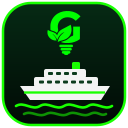
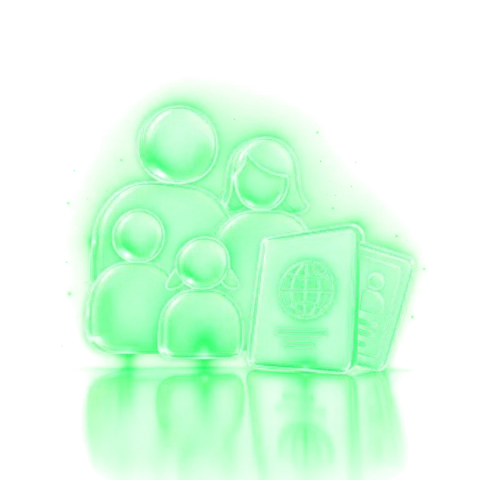
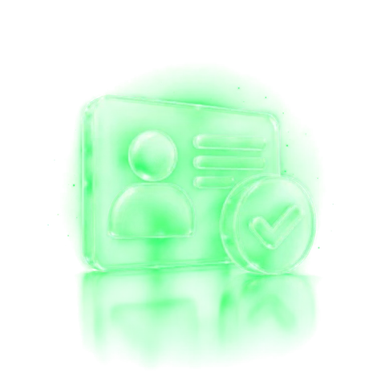

Portal do Cruzeiro
Parabéns! Você está qualificado(a)
para o Cruzeiro iGreen 2026.
Contagem regressiva da viagem
Embarque em 29/11, no Porto de Santos · MSC Seaview
Informações essenciais
O que você ganhou
Logística, transporte e pacote de bebidas não estão inclusos na premiação.

A bordo
O roteiro da viagem
Quatro dias a bordo do MSC Seaview, saindo e voltando pelo Porto de Santos, com parada em Búzios. Passe o mouse — ou toque — nos portos da carta para ver cada dia.
3º e 4º hóspede
Valores para acompanhantes
Até dois hóspedes extras na mesma cabine, pagos por pessoa.

Atenção
Viagem com menores de idade
Duas regras valem para todo menor de 18 anos a bordo. Confira antes de fechar a cabine.
Cabine só com menores: não pode

Regra 2 · No embarqueSem os pais ou sem um deles
A autorização precisa ter
Conforme as orientações da Polícia Federal.
Opcional · por pessoa
A carta de bebidas
As bebidas não fazem parte da premiação. Escolha o pacote antes de embarcar.
Regras de qualificação
Quem embarca
Perguntas frequentes
Ainda ficou alguma dúvida?
Cabine extra
Quer levar mais gente a bordo?
(31) 7170-2261Compre com o parceiro representante da CVC ou pelos canais oficiais da MSC Cruzeiros. A compra está sujeita à disponibilidade do navio.